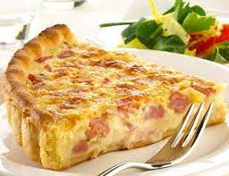

<!DOCTYPE html>
<html lang="en">
<head>
    <meta charset="UTF-8">
    <meta http-equiv="X-UA-Compatible" content="IE=edge">
    <title>Quiche de bacon y jamon York</>
    <link rel="stylesheet" href="css/estilos.css">
</head>
<body>
    
    <section>
        <h2>Ingredientes</h2>
        <ul>
            <li>5 huevos</li>
            <li>200 gr de queso/li>
            <li>250 ml de nata liquida</li>
            <li>200 gr de bacon</li>
            <li>200 gr de jamon york</li>
            <li>aceite, sal, pimienta</li>
        </ul>
        </section>
    
        <section>
        <h2>Elaboracion (Pasos)</h2>
        <ol>
            <li>Estirar bien la pasta</li>
            <li>Hacer agujeros a la masa con un tenedor</li>
            <li>Meter al horno durante 15 min a 180C</li>
            <li>Con la pasta ya cocinada añadir el bacon, jamon york y queso rallado</li>
            <li>Añadir mezcla de nata y huevos y hornear por 30min a 180C</li>
        </ol>
        </section>   
        <nav>
            <ul>
                <li>
                    <a href="index.html">Regresar</a>
                </li>
            </ul>
        </nav>  
</body>
</html>

color azul a 12 px